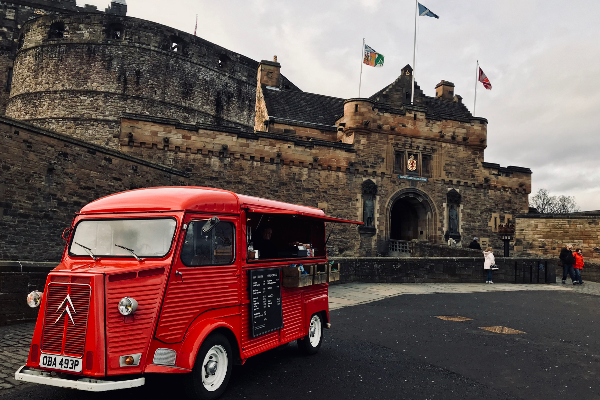
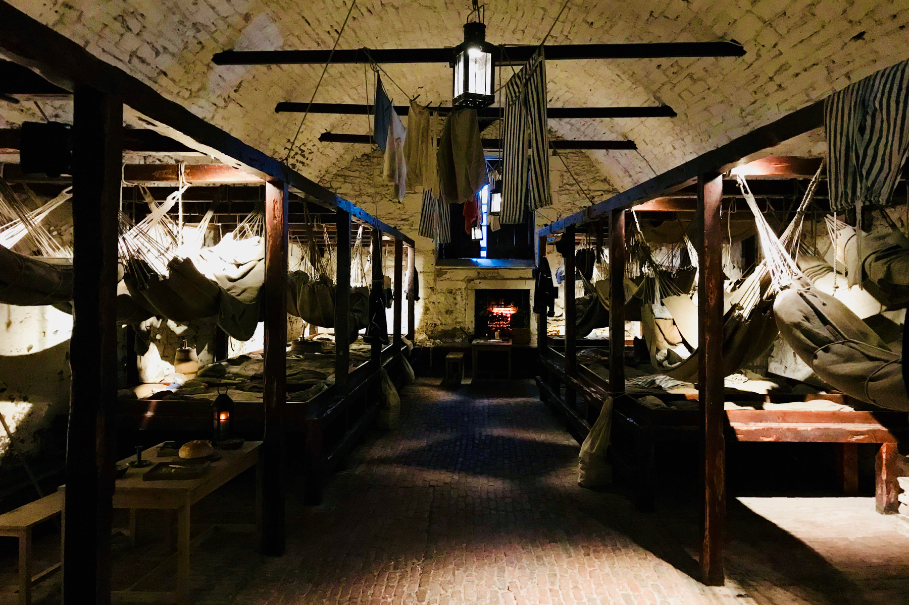
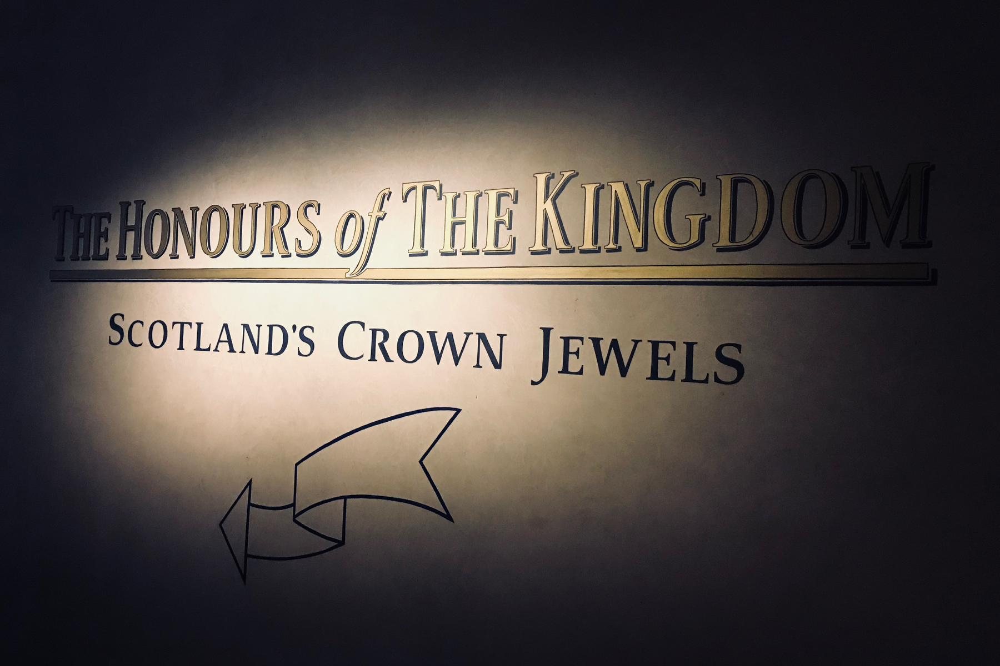
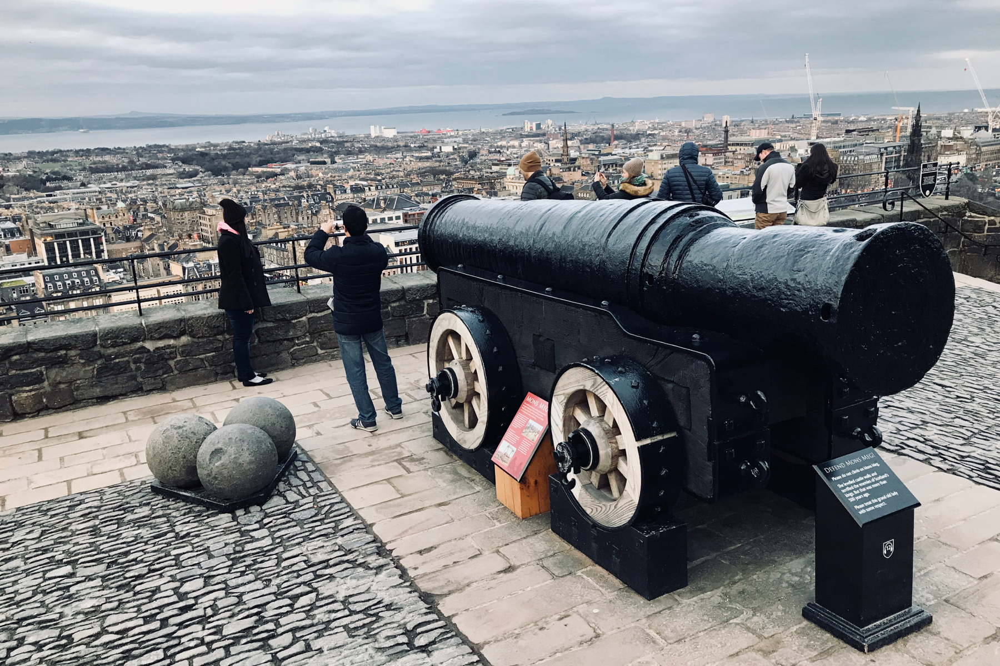
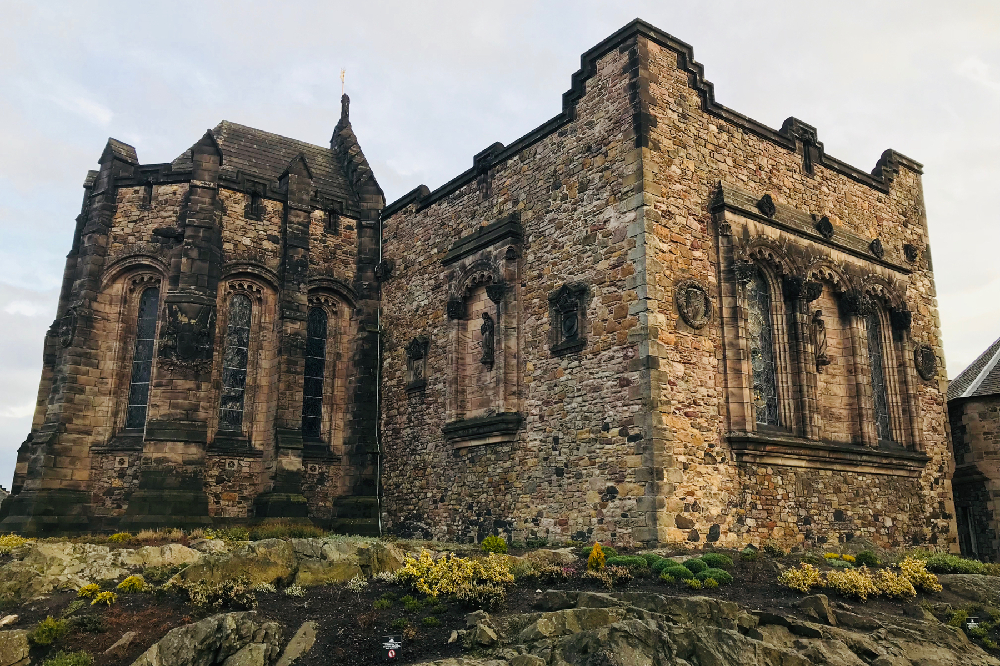
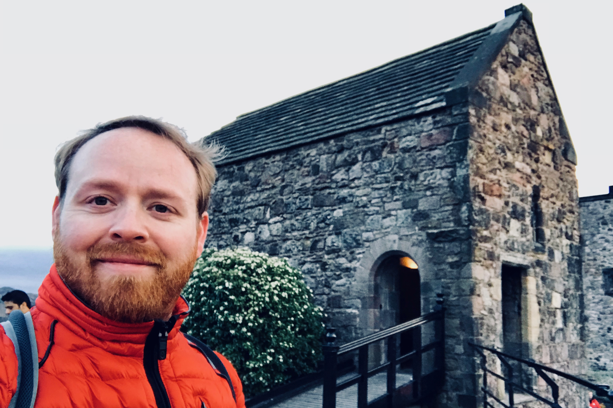

Edinburgh Castle Walking Tour


After having spent my morning taking a free walking tour, I decided it was worth buying a ticket to one of the afternoon paid tours. The tour organizer, SANDEMANs, had several to chose from but I was most interested in getting to know the Edinburgh Castle. So after a quick lunch on my own, I rejoined my trusty (and awesome) guide, Dave, and off we went together on the Edinburgh Castle walking tour.
This tour runs daily in the afternoon. Check the SANDEMANs website for schedules and ticket information.
Keeping things simple, our meeting point was at the same location as the free walking tour, on The Royal Mile. Our group was small, just 7 of us. After going through a quick round of introductions, we started our 5-minute walk up the hill to the Edinburgh Castle.
Additional reading: Edinburgh FREE Walking Tour - All You Need to Know Before You Go
In A Nutshell
Highlights - Enthusiastic and knowledgeable guides tell educational stories with flair and efficiency. The Edinburgh Castle is perhaps the most historically significant building in Scotland. The views from on top of the castle are incredible.
Lowlights - If you were to have bad weather, there is almost no protection from the elements. If you have seen the British Crown Jewels in London, don’t get too excited about the Scottish Crown Jewels in Edinburgh Castle.
Bottom line - The Edinburgh Castle walking tour is a great way to see the castle and ensure that you don’t miss any detail of the architecture or significant history. On a day with good weather, this is a perfect post-lunch activity.
Edinburgh Castle Walking Tour
The official website of the Edinburgh Castle offers a lot of great information about the castle’s history and the independent tours you can take on your own. I recommend that you [download the official Edinburgh Castle Map” file=”../assets/images/2018/01/edinburgh-castle-orientation-map.pdf) now so that you can better orient yourself as you read this article and follow along on the map.
The tour was nearly two hours from start to finish. When the tour concludes, you are free to explore the castle on your own and see some of the special exhibits, such as Scotland’s Crown Jewels which are on display in the castle.
During the winter months, like when I was there, the tour concludes just before sunset, which can make for a spectacular view. Just plan accordingly because though the sunset is worth sticking around for, the temperature will drop very quickly.
The Gatehouse at Edinburgh Castle
The Edinburgh Castle was built as an impenetrable and menacing fortress with deterrence kept in mind as the main message which the architecture should portray to any who cast a gaze upon it. Standing atop of vertical cliffs on three sides, the castle looks unapproachable. Despite that, it has been through 26 sieges, which makes it one of the most besieged places in Britain and among the most besieged places in the whole world.
The new gatehouse is the first thing you see when you approach the Edinburgh Castle. You can see that the stone color and the architecture is rather different from the castle which lay behind. The reason for this was triggered by a visit of Queen Victoria who upon arrival was a bit disappointed at how unwelcoming the castle felt. She desired that there be a more royal castle aesthetic and so this new gatehouse was built in 1888, along with one tower on the main building which, though a small detail, does go a long way to making the Edinburgh Castle feel a bit more like the royal castles of England, such as Windsor Castle.
 A coffee truck stands in front of the Gatehouse at Edinburgh Castle
Prisoners of War
What really makes a castle? A dungeon! The Prisoners of War is a reenactment and multimedia experience in the Edinburgh Castle’s dungeon. Here, you get to explore the castle’s prison as it would have looked for centuries as the home to prisoners of war from all over the world. Alongside furnishings and personal items which were typical of prisoners who live here, there also audio clips playing throughout the room. As you listen, you get to learn about some of the lives and experiences of real prisoners, who were kept in the Edinburgh Castle dungeon. Prisoners came from all over the world, because of all sorts of conflicts, including the American Revolution.
 Prisoners of War Exhibit at Edinburgh Castle
Scotland’s Crown Jewels
At the highest point of Edinburgh Castle are the Scottish Crown Jewels, known as “The Honors of the Kingdom.” You are not allowed to take photos inside, so a quick Google search can show you what it is you can expect here. I will just let you know now that if you have seen the crown jewels in London, this exhibit is not to be compared. In a lot of ways, Scotland’s crown jewels are more significant because they have a longer history. But they are not as refined and glamorous as the crown jewels that you will find at the Tower of London.
Leading up to seeing the crown jewels is an exhibit chronicling the history of the monarchy and other various royal families and dynasties of Scotland. The whole exhibit is done very well. Unfortunately, I didn’t have very much time left to spend in the castle so I had to rush through all of that fairly quickly. You should give yourself at least 20 to 30 minutes to enjoy The Honors of the Kingdom exhibit.
 Sign leading to The Honours of The Kingdom Exhibit at Edinburgh Castle
Mons Meg - 510mm Caliber Cannon
The Mons Meg is a 500-year-old siege cannon. Its 20-inch (510mm) barrel size makes it one of the largest-caliber cannons in the world. Though only fired a few times, and usually for ceremonial reasons, the 175 kilograms (386 lb) stone cannon balls are proven to have a consistent range of around 2 miles (3 km).
The last time Mons Meg was fired with ammunition was in 1680 to celebrate the arrival of James, Duke of Albany and York, who would later become King James VII. On this occasion, the barrel burst open and it has not been capable of munitions firing ever since. However, it is fired still today once a year on Hogmanay (new year) to mark the beginning of the fireworks display. Of course, now it just fires blanks.
 Mons Meg at Edinburgh Castle
Scottish National War Memorial
Another recent addition to the Edinburgh Castle is the Scottish National War Memorial. The memorial was opened in 1927 and pays tribute to all fallen soldiers of Scotland in both World Wars and conflicts since. Presumably, it was first built with the intention of memorializing soldiers of the first World War only, since the second war had not yet been fought. After World War II, 50,000 Scottish names were added to the building’s roster.
The exterior of the memorial has been designed with the Edinburgh Castle aesthetic kept in mind. As this rests atop one of the highest points of the castle’s grounds, it is very visible from afar and so the architecture is intended to blend in. The interior, on the other hand, is almost art deco in style and feel much more like a modern memorial of sorts. The flags of Scottish regiments hang throughout. Under each flag are thick books on display with the names of all those who have served in each regiment and who have died in service.
 Scottish National War Memorial at Edinburgh Castle
St Margaret’s Chapel
The oldest building in all of Edinburgh, St Margaret’s Chapel is a simple construction atop the Edinburgh Castle complex. The chapel was built in the 12th century and is thought to be a place of worship for St. Margaret herself. Though there is some debate about that due to the architecture giving hints of being built a bit later during the reign of her son, David I.
In 1314 the castle was captured by Robert the Bruce and all the buildings inside, except for the Chapel, were destroyed. Though the chapel did fall in to disuse after that, it would eventually be renovated and put back in to use in the 19th century. It has held services on a fairly regular basis ever since.
 St Margaret’s Chapel at Edinburgh Castle
A Day Well Spent in Edinburgh
And that concludes my day in Edinburgh! I started with a free walking tour, visited the Museum of Scotland, had haggis for lunch, and then spent the afternoon walking around Edinburgh Castle where I ended up catching the sunset. I recommend this schedule for anyone who is visiting Edinburgh, either for your first day in town or if it is your only day in Edinburgh, as it was for me.
Have you been to Edinburgh? Have you visited the Edinburgh Castle? I would love to have your feedback and impressions of the castle. Please feel free to leave a comment below or reach me directly on Twitter @judsonlmoore.